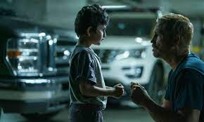

Sonido De Libertad
Trailer:
Sinopsis:
Sonido De Libertad, basada en una increíble historia real, trae luz y esperanza
al obscuro mundo del
trafico de menores. Después de rescatar a un niño de los
traficantes, un agente federal descubre que la
hermana del niño todavía está
cautiva y decide embarcarse en una peligrosa misión para salvarla. Con el
tiempo
en su contra, renuncia a su trabajo y se adentra en lo profundo de la selva colombiana,
poniendo
su vida en riesgo para liberarla y traerla de vuelta a casa.